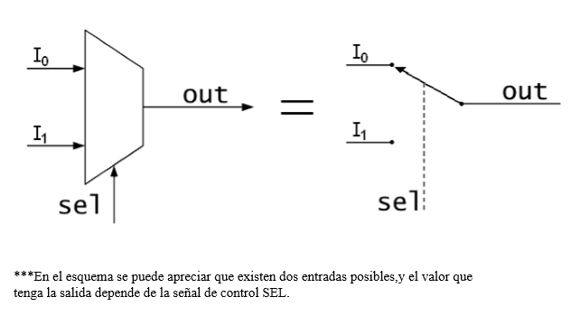

Multiplexores
¿Qué son los mutiplexores?
Un multiplexor es un circuito digital que selecciona una de entre varias entradas de datos Ii y lleva su valor lógico a la única salida Z del circuito.
La selección de los datos se realiza mediante una o varias entradas de control Sj. La codificación binaria resultante de las entradas S indica el índice de la entrada I que pasa a la salida. Existiendo una entrada de habilitación (enable),la cual pone en funcionamiento el circuito,y trabaj en bajo áctivo
ESQUEMA BÁSICO DEL FUNCIONAMIENTO DE UN MULTIPLEXOR 2 INPUTMUX
ESQUEMA DE MULTIPLEXORE
Su funcionamiento es como sigue:
Con la combinación binaria presente en las entradas de selección, escogemos la entrada de información cuyo valor se va a transmitir a la salida.

Diseño un multiplexor de 2 canales de entrada.
1º) Se procede a la implementación de una tabla de verdad,en la cual se aprecian los valores de la salida dependiendo de el valor de la señal de control y de la señal de habilitación(enable): Ejemplos de explicación: 1-.Si el Enable está en alto activo,el circuito está apagado.2-.Si el Enable está en bajo activo,el circuito funciona y selecciona la entrada atribuida a la señal de control.